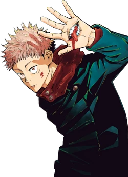

Characters

Yuji Itadori
Yuji is the grandson of Wasuke Itadori who was living a normal life until he encountered Megumi and ate one of Sukuna's fingers. After becoming Sukuna's vessel, Yuji began attending Tokyo Jujutsu High alongside Megumi and Nobara as first-year students.

Megumi Fushiguro
Megumi Fushiguro (伏ふし黒ぐろ恵めぐみ Fushiguro Megumi?) is the deuteragonist of the Jujutsu Kaisen series. He is a grade 2 jujutsu sorcerer and first-year student at Tokyo Jujutsu High alongside Yuji Itadori and Nobara Kugisaki.
Nobara Kugisaki
Nobara Kugisaki (釘くぎ崎さき野の薔ば薇ら Kugisaki Nobara?) is the tritagonist of the Jujutsu Kaisen series. She is a first-year student and grade 3 jujutsu sorcerer at Tokyo Jujutsu High studying under Satoru Gojo alongside Yuji and Megumi.